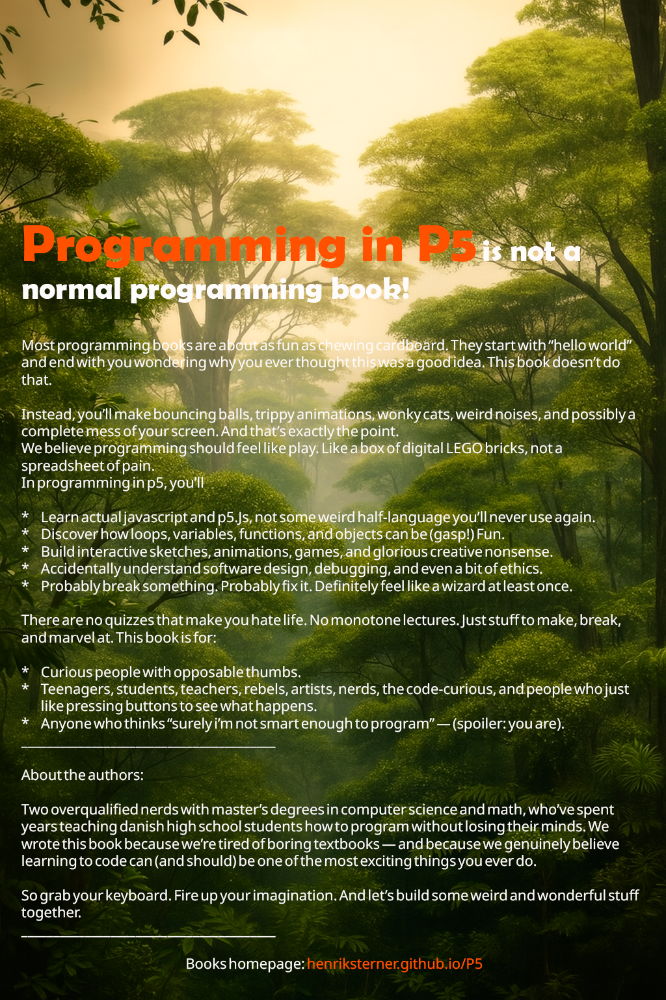

Frontpage

Backcover
If coding textbooks make you yawn by line three, Programming in P5 will wake you up with colour, motion, and mischief.
This isn’t about cranking out a thousand lines just to build a calculator that can add 2+2 (spoiler: it’s still 4). You’ll learn by making delightful things that actually do something—bouncing shapes, interactive doodles, and visuals that prance around like they’ve had too much coffee.
Perfect for artists, designers, and anyone who suspects computers were meant for more than spreadsheets and tax returns. With Programming in P5, coding becomes less “serious business” and more “look what I just made—isn’t it cool?!”
Bring your imagination, pack your sense of humour, and step into the wonderfully weird crossroads where art and technology collide… with plenty of sparks.
Upcoming: In the following months, we plan to add more chapters, including:
Stay tuned for updates and new content!
Please report any issues or suggestions by writing to henrik.sterner@gmail.com.